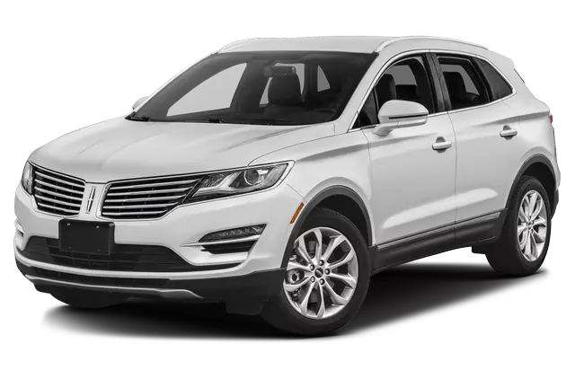

|
The 2015 Lincoln MKC ranks in the middle of the luxury compact SUV class. It has many appealing traits, including strong engine options, a comfortable ride, and lively handling, but some of its rivals bring more to the table.
|
 |
The 2015 Lincoln MKC comes with a 240-horsepower turbocharged (EcoBoost) 2.0-liter four-cylinder engine. A 285-horsepower EcoBoost 2.3-liter four-cylinder engine is available. Both engines are mated to a six-speed automatic transmission. The EPA estimates that the MKC gets 20/29 mpg city/highway, which is average for the class.
Test drivers praise the 2015 MKC's engines, saying that both deliver more than enough power for daily driving. However, a few automotive writers think the MKC's engine options don't offer as much power as their horsepower numbers suggest. Models with the upgraded engine come standard with all-wheel drive, and automotive journalists say it offers strong off-the-line acceleration and ample highway passing power. Some critics also say the MKC's transmission shifts seamlessly and its paddle shifters work well, however they note that the transmission can be slow to respond in certain situations.